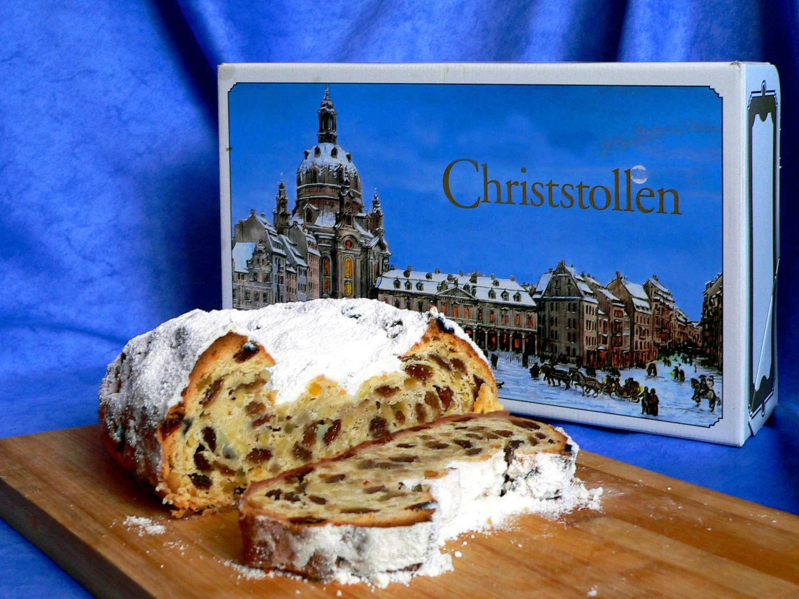
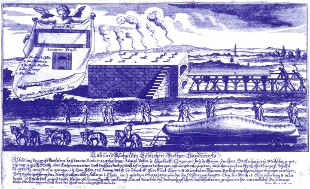
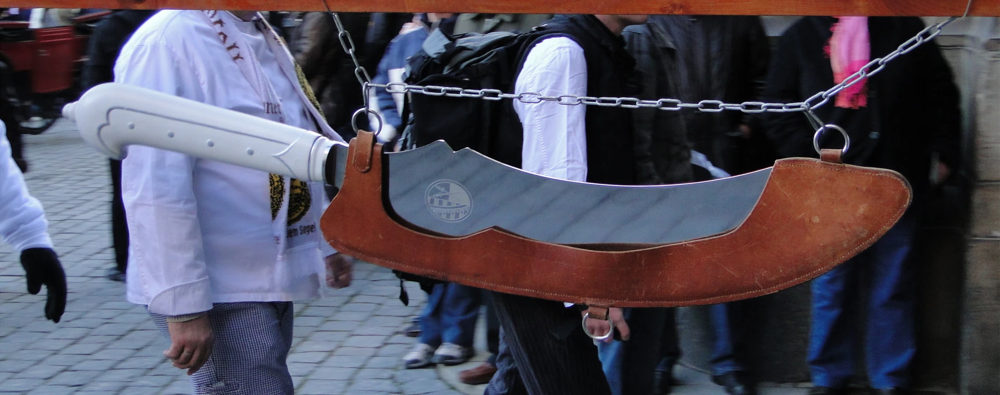

아직 펼치지 않은 카드성탄을 기다리는 날들 · 3드레스덴 슈톨렌하얀 가루를 뒤집어쓴 이 빵, 무엇을 닮았을까요?하얀 가루를 뒤집어쓴 빵이야. 뭘 닮았을까?
1474년 · 1490년 · 1730년독일 드레스덴
드레스덴 슈톨렌
독일 드레스덴의 성탄 빵 슈톨렌은 원래 대림절 금식 때 먹던 소박한 빵이었어요. 버터를 넣을 수 있게 된 것은 교황이 보낸 ‘버터 편지’ 덕분이었어요. 재료를 하나씩 넣고, 마지막에 흰 설탕을 덮어 보세요.
하얀 가루를 덮은 성탄 빵이야. 옛날엔 이 빵에 버터를 넣을 수 없었대! 재료를 하나씩 넣어서 같이 만들어 볼까?
검수 전 시안이에요(기준서 1판). 장면에는 기록에 있는 것만 옮겼고, 빵 모양의 뜻풀이는 누가 그렇게 소개하는지 밝혔어요. 상상은 ‘눈 감고 상상해 보기’에만 썼어요. 재료를 놓는 부엌 무대 그림은 이 안내서가 그렸어요.
시안 확인용카드 단계 미리 보기
1
흰 포대기 입히기
드레스덴 슈톨렌은 1474년 한 병원의 계산서에 처음 나와요. 대림절에 먹던 금식 빵으로, 밀가루와 효모와 물로만 만들었어요.
유럽연합의 소개에 따르면, 1450년 교회는 대림절에 버터로 굽는 것을 금했어요. 기름으로 구운 빵은 밋밋하고 맛이 없었어요. 1490년, 교황 인노첸시오 8세가 ‘버터 편지’를 보내 드레스덴 슈톨렌 제빵사들을 이 금지에서 풀어 주었어요.
아래 나무 판 위에 재료를 하나씩 놓아 보세요. 마지막에는 구운 빵에 버터를 바르고 흰 설탕을 덮어요.
슈톨렌을 다 만들었어요.
무대 그림: 이 안내서가 그린 슈톨렌 만드는 판 · 재료와 차례는 유럽연합 보호 지리적 표시 소개를 바탕으로
하얗게 감싸인 길쭉한 모양을 두고, 독일 개신교 언론 epd는 ‘성경 이야기 속 아기 예수를 떠올리게 하고, 흰 설탕은 포대기를 뜻한다고 한다’고 소개해요. 독일 소개 누리집 deutschland.de도 이 모양이 포대기에 싸인 아기 예수를 상징한다고 적어요. 누가 처음 그렇게 풀었는지는 확인되지 않아요.
반죽, 버터, 건포도, 아몬드, 그리고 흰 설탕! 하나씩 넣어서 슈톨렌을 만들어 볼까?
물어보기흰 설탕을 덮은 길쭉한 빵, 무엇을 닮은 것 같아?
2
1730년의 거대한 슈톨렌
1730년, 작센의 선제후이자 폴란드 왕인 ‘강건왕’ 아우구스트 2세는 차이트하인 들판에서 큰 군대 잔치를 열고, 손님 2만 4천 명이 나눠 먹을 슈톨렌을 주문했어요.
제빵사 100명쯤이 밀가루 20첸트너(1톤쯤), 달걀 3,600개, 우유 326통으로 1.8톤짜리 슈톨렌을 구웠어요. 이 빵을 굽기 위해 커다란 화덕을 따로 지었어요. 이 일을 기념한 동판화에는 말 여덟 마리가 슈톨렌을 실은 수레를 끄는 모습이 남아 있어요.


드레스덴 제빵사들은 1730년의 이 일을 본떠 1994년부터 슈톨렌 축제를 열어요. 해마다 대림절 둘째 주일 전날, 커다란 슈톨렌을 수레에 싣고 시내를 돌아요. 첫 조각은 1730년의 칼을 본떠 만든 길이 1.5미터쯤의 큰 칼로 잘라요.
대림절에 구운 슈톨렌, 첫 조각은 누구와 나눌까요?
옛날 임금님이 엄청 큰 슈톨렌을 굽게 했대. 말 여덟 마리가 수레를 끌었어!
물어보기그렇게 큰 빵을 2만 4천 명이 나눠 먹으면, 한 사람이 얼마나 먹었을까?
눈 감고 상상해 보기
부엌에 버터 녹는 냄새가 퍼져요. 갓 구운 빵에서 김이 오르고, 붓이 지나간 자리가 반짝여요. 체를 톡톡 치자 흰 가루가 눈처럼 내려앉아요. 빵이 조용히 하얀 옷을 입어요.
눈을 감아 봐. 고소한 버터 냄새! 체를 톡톡 치면 흰 가루가 눈처럼 내려와. 빵이 하얀 옷을 입었어.
나의 자리
누군가를 기다리며 미리 정성껏 준비해 본 적이 있나요? 그때 무엇을 준비했나요?
성탄절에 누구랑 무엇을 나눠 먹고 싶어?
마음에 닿는 한 줄을 고르거나 직접 써 보세요. 한 줄을 남기면 이 자리의 도장이 찍혀요. 이 기기에만 저장돼요.
더 깊이
궁금한 칸만 펼쳐 읽어도 괜찮아요.
알고 보면
크리스트슈톨렌 1530년 무렵 기록에는 ‘크리스트슈톨렌’이라는 이름이 나와요. 그 뒤 드레스덴 제빵사들은 해마다 성탄에 작센의 군주에게 슈톨렌을 바쳤어요. 장인 여덟 명이 18킬로그램짜리 슈톨렌을 들고 시내를 행진한 뒤 궁전으로 가져간 일도 있어요.
손으로 빚는 빵 드레스덴 슈톨렌은 틀에 넣어 굽지 않고 손으로 빚어요. 처음에는 중간 온도로 짧게, 다음에는 낮은 온도로 오래 구워요.
보호받는 이름 2010년 유럽연합은 ‘드레스덴 슈톨렌’을 보호 지리적 표시로 등록했어요. 드레스덴 둘레에서 정해진 재료 비율로 만든 것만 이 이름을 쓸 수 있어요.
기록마다 다른 점
버터 편지는 몇 년? 1490년이라고 적은 자료(유럽연합 소개)도 있고, 1491년이라고 적은 자료(애틀러스 옵스큐라)도 있어요.
누구에게 허락했나 유럽연합 소개는 버터 편지가 드레스덴의 슈톨렌 제빵사들을 금지에서 풀어 주었다고 적어요. 선제후 집안에만 허락하고, 다른 사람은 해마다 프라이베르크 대성당을 짓는 데 돈을 내야 했다고 소개하는 자료(영어 위키백과, 근거 표시 없음)도 있어요.
흰 포대기 빵 모양을 포대기에 싸인 아기 예수로 푸는 말은 독일의 여러 자료에 나와요. epd는 ‘그렇다고 한다’로, deutschland.de는 ‘상징한다’로 적었어요. 누가 처음 그렇게 풀었는지는 확인되지 않아요.
1474년보다 앞선 이야기 1329년 한 독일 주교가 연 빵 대회에서 시작되었다는 이야기도 전해져요(유럽연합 소개). 드레스덴 슈톨렌이 처음 문서에 나오는 해는 1474년이에요.
1730년의 무게 유럽연합 소개는 1.8톤, 애틀러스 옵스큐라는 ‘거의 2톤’이라고 적었어요.
함께 읽는 말씀
말씀은 뜻만 옮기고, 본문은 대한성서공회 개역개정으로 이어 드려요.
누가복음 2장 7절 마리아가 맏아들을 낳아 강보, 곧 포대기로 싸서 구유에 뉘었다는 말씀이에요.
만드는 차례대로 금박
만드는 차례(반죽 → 버터 → 건포도와 과일 껍질 → 아몬드 → 버터와 흰 설탕)대로 다 놓으면 카드에 금박이 입혀져요.
반죽 → 버터 → 건포도와 과일 껍질 → 아몬드 → 버터와 흰 설탕 차례로 놓기
첫 조각 나누기 채색
둘 가운데 하나만 해도 카드가 채색돼요.
슈톨렌 첫 조각을 누구와 나눌지 고르기
아이와 함께 ‘영화처럼 보기’를 끝까지 보기
근거 보기 (8)
- 유럽연합 집행위원회: 드레스덴 크리스트슈톨렌(보호 지리적 표시) — 1474년 병원 계산서, 1450년 버터 금지, 1490년 버터 편지, 1530년 이름, 1730년 2만 4천 명·제빵사 100명·재료, 축제, 2010년 등록, 만드는 차례
- 애틀러스 옵스큐라: 드레스덴 슈톨렌 — 1491년 버터 편지, 1730년 특별 화덕·제빵사 100명·여덟 마리 말 동판화, 슈톨렌 칼(5피트·26파운드, 1730년 칼을 본뜸, 첫 조각만)
- evangelisch.de(epd), 2025.11.23: 전통 수공예 크리스트슈톨렌 — 모양과 흰 설탕의 뜻(‘그렇다고 한다’), 구운 뒤 버터·설탕, 반죽 재료, 1474년, 1994년부터 축제
- deutschland.de: 성탄 고전 크리스트슈톨렌 — 포대기에 싸인 아기 예수를 상징, 2010년 보호 표시, 반죽 재료
- 위키미디어 공용: 엘리아스 베크의 채색 동판화 설명(27½×13¾cm)
- 위키미디어 공용: 2011년 슈톨렌 축제의 큰 칼(본뜬 것) 사진 설명
- 영어 위키백과: Stollen — 길잡이로만(버터 편지를 받은 사람과 프라이베르크 대성당 이야기, 근거 표시 없음)
- 대한성서공회 개역개정: 누가복음 2장
그림·사진·소리 출처
‘처음 만나는 기독교 문화’의 깊은 카드예요. 실제 인물의 얼굴이 나오는 사진은 쓰지 않았어요. 카드 단계와 남긴 글은 이 기기에만 저장돼요.